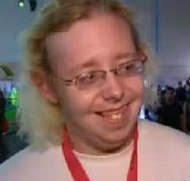

Der Supervisor
...In einer Welt, die wilder als all deine Träume ist! Oh... Unbeschreiblichkeit der Himmel... Es war die Herrlichkeit, und die Herrlichkeit wurde Fleisch! Naja, wie dem auch sei, wach endlich auf! Es ist ein herrlicher Tag voller Möglichkeiten! Rockstah, die Welt, nein, viel wichtiger, Rodgau braucht dich!
Die vielen Leute hier in Rodgau haben unzählige Aufgaben für dich, sie brauchen den Rockstah! Und die ganzen neuen Releases für die Xbox erst...
Steh auf, vergiss, dich zu duschen, und raus in die reale Welt! ...Okay, mal eben WoW durchspielen geht vorher noch.
Hol dir den Gamerscore! Mach das "L"! Das ist die... Nerdrevolution! Etc, etc, etc...
SVVAG!
Der Supervisor
Du hast aber nochmal Glück gehabt. Die Alte hat dir nur eine lange, lange Heugabel geschenkt. Das war ja mal wieder ein aufregender Tag in Rodgau. Ich bin schon ganz außer Puste. Die ganze Action hat sich gelohnt: Du hast sogar ein Achievement erhalten.
Och Mist, die Alte kann den Kanal nicht halten. Die steht wohl auf dich. Verdammt, es ist noch immer kein Feierabend.
Der Supervisor
Eine brenzlige Situation war das, aber jeder vernünftige Mensch hätte genau so gehandelt und ihn kaltblütig umgelegt. Tja, Life is a Battlefield. Hier in Rodgau ist aber ganzschön was los. Wie schon Gordon Freeman sagte: "Rodgau, der Nabel der Welt." Oder sagte er was anderes als Nabel?
Ein Achivement hat das Ganze auch gebracht. Da soll noch einer sagen, Verbrechen lohnen sich nicht. Ich habe das Gefühl, als würde morgen irgendetwas apokalyptisches passieren. Genau die richtige Einstellung, um den Abend mit Fallout ausklingen zu lassen, bis die Sicherung durchknallt. Was soll ich noch weiteres sagen... Möge die Macht mit dir sein!